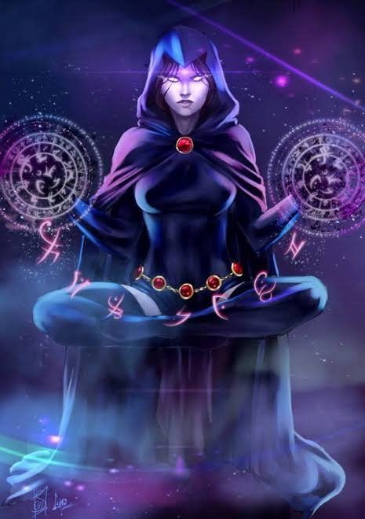
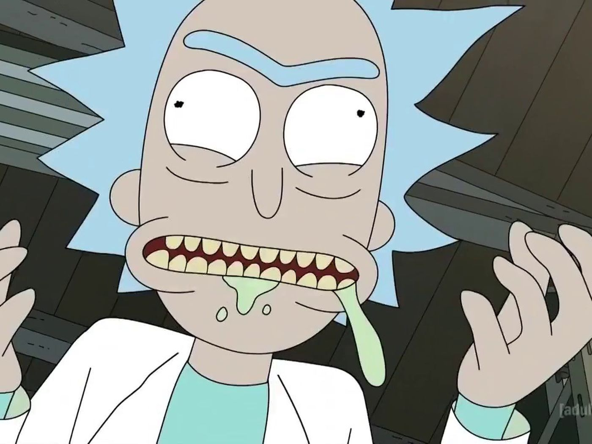
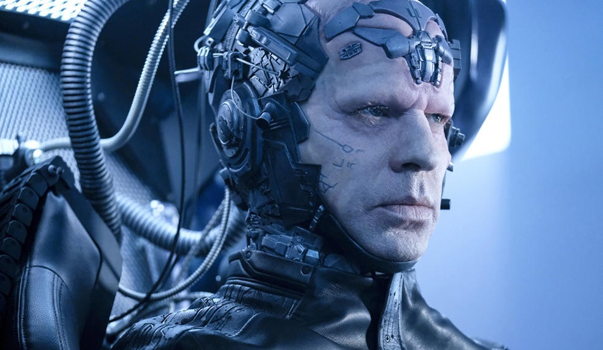
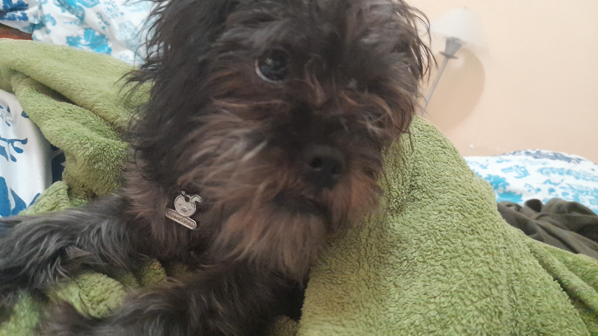

Mi nombre es Cimmino Yáñez Nicholas Joseph pero me gusta que me digan Nicho.
Y me gusta dormir, pero no hablare de eso, ya que me gusta más investigar de temas totalmente random, sin ningun sentido y porque si
y me llego a obsesionar con ellos a tal grado de saber todo de ese tema, o al menos la mayoria. El caso, hace unos años me obsesione horrible con los
eneatipos, que por si nadie los conoce, son numeros que describen la personalidad a travez de traumas de la infancia, y que por alguna extraña y rara
razon, siempre coinciden con la realidad, y es que ¿qué son los humanos sin sus traumas?, realmente todos tenemos al menos uno
Los eneatipos son nueve, de los cuales se dividen en tres grupos:
8,9,1 son viscerales, sus traumas se relacionan con las acciones que deben tomar y como reaccionar ante problemas y la vida en general
2,3,4 son emocionales, sus traumas se relacionan con tratar de encajar, se fijan en como los ven, como se ven a si mismos y necesitan afecto del otro
5, 6 y 7 son mentales, sus traumas se relacionan con pensamientos, no dejar sentir emociones o inseguridades
Podria describir con todo el detalle posible cada uno, sus areas de oportunidad, debilidades, fortalezas, amenazas, virtudes, traumas de la infancia, actictudes que los distinguen de cada uno de los
eneatipos, pero creo que ese tema se queda por si en algun momento nos piden algo relacionado a hacer una blog sobre un tema en especifico, pero eso no me quita el decirles mi eneatipo
y si, se que es dificil de ver, pero soy 5w4 (el w es la ala, se basa de la teoria que no solo tenemos un eneatipo, sino que compartimos caracteristcas con nuestros vecinos), este perteneciendo
al area de los mentales y lo más probable es que si lo investigan podran sacar todas mis debilidades y atacarme con ellas, pero Who cares?
-
El caso, espero que disfruten de lo que queda de mi presentacion.
Que de verdad, no se como pueden checar esto sin antojarse, *insertar carita llorando*, yo ya me ando antojando bien feo, creo que es porque tengo hambre.
| Nombre | Foto | Explicacion |
|---|---|---|
| Raven |  |
A mi siempre me han gustado los temas de la magia oscura y todo ese tipo de cosas, por lo que al ver al raven y sus poderes que aparte creo que es super mega poderosa y si ella quiere puede facilmente destruir al mundo, porque es Raven, lo controla todo aparte que mi color favorito es el negro, por lo que ella cumple exactamente con el personaje perfecto. |
| Rick |  |
Rick aunque a veces puede ser demasiado eneatipo 5 y asi, me encanta, ya que es un genio y es como siempre tuviera un plan para todo, realmente, y como si todos los escenarios posibles ya los hubiera pensado e imaginado como un capitulo en donde tenian que atrapar a un ladron, pero que al final se termino convirtiendo en una batalla contra una maquina, que al final nos enteramos que no fue sino un siniestro plan de Rick para que Morty siguiera siempre sus aventuras, no solo metiendose con la ciencia sino tambien con la psicologia. |
| The Thinker(Clifford DeVoe) |  |
Este personaje que sale en la 4ta temporada de Flash, yo lo admiro mucho, ya que es demasiado inteligente y creo que daba material hasta para dos o más temporadas, pero lastima que no lo supieron aprovechar bien y solo lo pusieron en una, y no me gusto como lo derrotaron. Pero bueno aparte de eso, me gusta mucho ya que como Rick, era muy inteligente y tiene todo planeado, realmente un genio, y creo que si me gusta mucho la gente inteligente. |
| Sam |  |
Porque es hermosa es mi perrita y quien diga que no es hermosa, toco decapitarle, porque es mi perrita y eso la la vuelve en la mejor perra del mundo y es perfecta y de hecho un dato curioso, es que pienso que a veces me quiere comer porque siempre me anda lamiendo y yo veo que a su comida tmb la lame, para suavizarla y asi poder comersela, entonces ya no estoy seguro si es porque si me quiere, o me quiere comer, asi que si algun dia, dejo de aparecer en clases, ya saben porque. Y ES HERMOSA |
Mi cancion favorita es After Dark de Mr.Kitty
Y aqui coloco el audio junto a la letra de la canción
I see you
You see me
How pleasant
This feeling
The moment
You hold me
I missed you
I'm sorry
I've given
What I have
I showed you
I'm growing
The ashes
Fall slowly
As your voice
Consoles me
As the hours pass
I will let you know
That I need to ask
Before I'm alone
How it feels to rest
On your patient lips
To eternal bliss
I'm so glad to know
As the hours pass
I will let you know
That I need to ask
Before I'm alone
How it feels to rest
On your patient lips
To eternal bliss
I'm so glad to know
We're swaying
To drum beats
In motion
I'm feeling
My patience
Controlling
The question
I won't speak
We're telling
The stories
Our laughter
He knows me
We're leaving
We're talking
You're closer
It's calming
As the hours pass
I will let you know
That I need to ask
Before I'm alone
How it feels to rest
On your patient lips
To eternal bliss
I'm so glad to know
As the hours pass
I will let you know
That I need to ask
Before I'm alone
How it feels to rest
On your patient lips
To eternal bliss
I'm so glad to know
The night will hold us close
And the stars will guide us home
I've been waiting for this moment
We're finally alone
I turn to ask the question
So anxious, my thoughts
Your lips were soft like winter
In your passion, I was lost
As the hours pass
I will let you know
That I need to ask
Before I'm alone
How it feels to rest
On your patient lips
To eternal bliss
I'm so glad to know
As the hours pass
I will let you know
That I need to ask
Before I'm alone
How it feels to rest
On your patient lips
To eternal bliss
I'm so glad to know
As the hours pass
I will let you know
That I need to ask
Before I'm alone
How it feels to rest
On your patient lips
To eternal bliss
I'm so glad to know
As the hours pass
I will let you know
That I need to ask
Before I'm alone
How it feels to rest
On your patient lips
To eternal bliss
I'm so glad to know